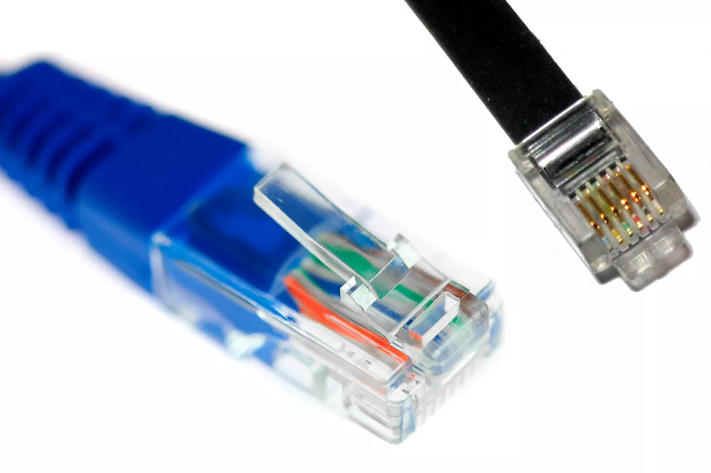
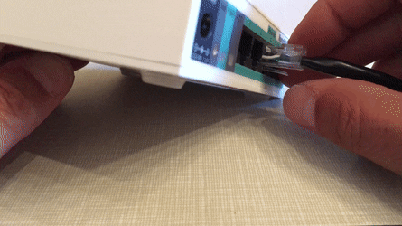

Argueably one of the most important creations in computing.
Ways in which Ethernet cables have changed everything? never thought you'd ask!
An Ethernet cable is one of the most common forms of network cable used on wired networks. Ethernet cables connect devices within a local area network, like PCs, routers, and switches. Given that these are physical cables, they do have their limitations, both in the distance that they can stretch and still carry proper signals, and their durability. These limits are one reason there are different types of Ethernet cables optimized to perform certain tasks in particular situations
Ethernet cables normally support one or more industry standards including Category 5 and Category 6. Most technicians refer to those standards as CAT5 and CAT6, respectively, so many online shopping carts use this abbreviated language as well.
A crossover cable is a special type of Ethernet cable specially designed for connecting two computers to each other. By contrast, most Ethernet cables are designed to connect one computer to a router or switch.
Ethernet cables are manufactured in two basic forms called solid and stranded. Solid Ethernet cables offer slightly better performance and improved protection against electrical interference. They're also more commonly used on business networks, wiring inside office walls, or under lab floors to fixed locations
Stranded Ethernet cables are less prone to physical cracks and breaks, making them more suitable for travelers or in home networking setups.
